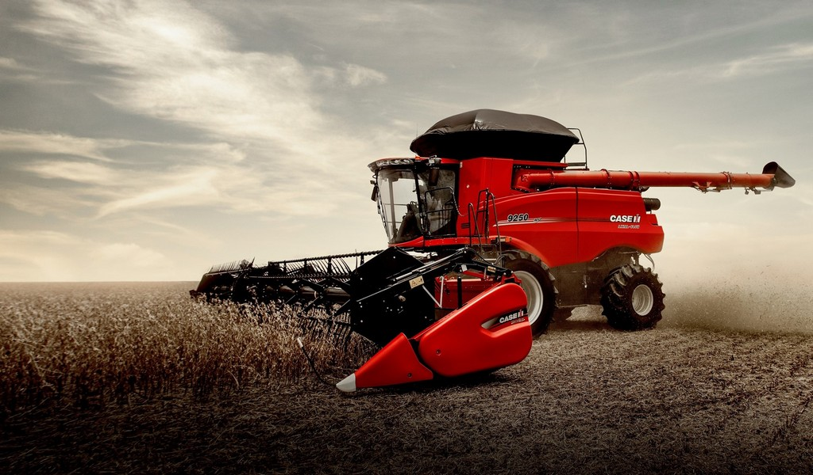
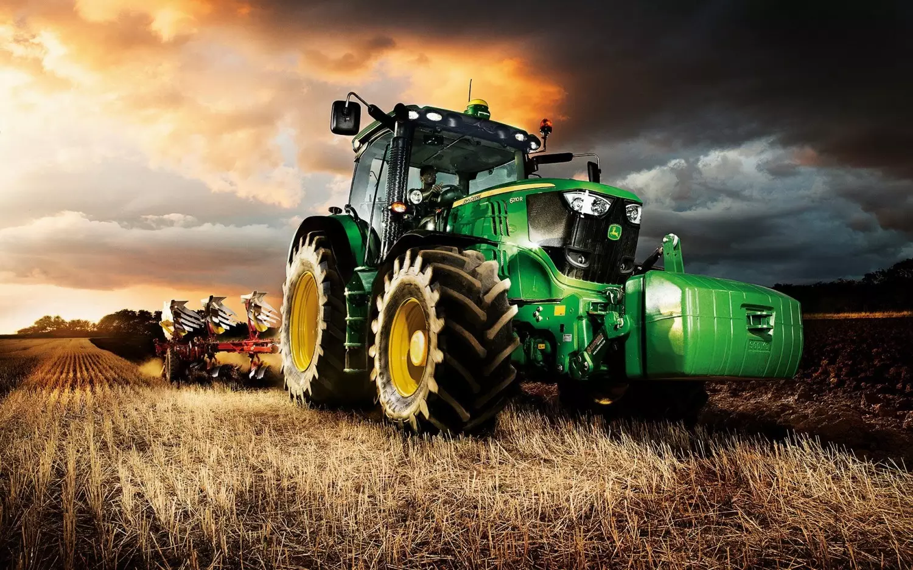

Colheitadeiras são máquinas agrícolas automotrizes essenciais para colheita eficiente de grãos e cana, separando-os da palha através de sistemas axiais ou convencionais (sacapalhas). Marcas líderes como John Deere, New Holland, Case IH, Massey Ferguson e Valtra dominam o mercado brasileiro. Modelos novos e seminovos, como as séries S700 ou CR, oferecem alta tecnologia, com preços que variam amplamente.


Caminhões agrícolas são veículos robustos adaptados para o transporte e operação no campo, frequentemente substituindo tratores em tarefas como aplicação de insumos, transporte de grãos e cana-de-açúcar. Com maior eficiência de combustível e menor custo de manutenção, marcas como Mercedes-Benz, Scania, Volvo e Volkswagen